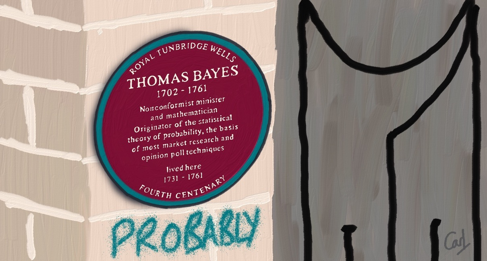
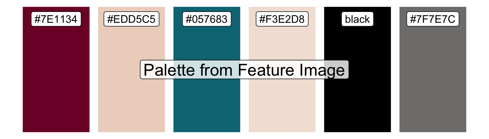
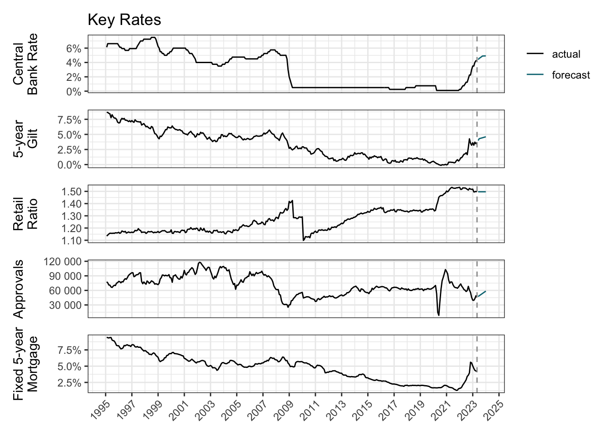
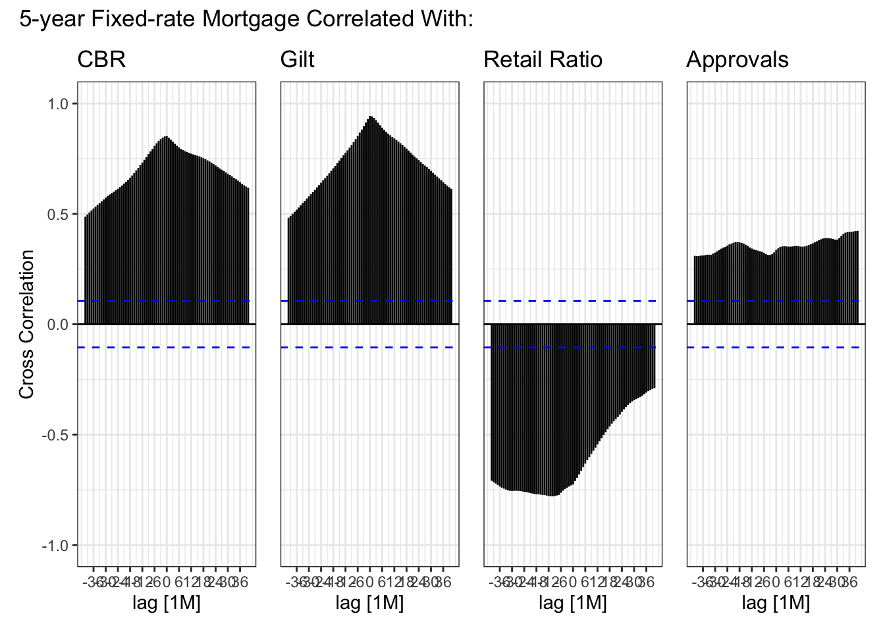
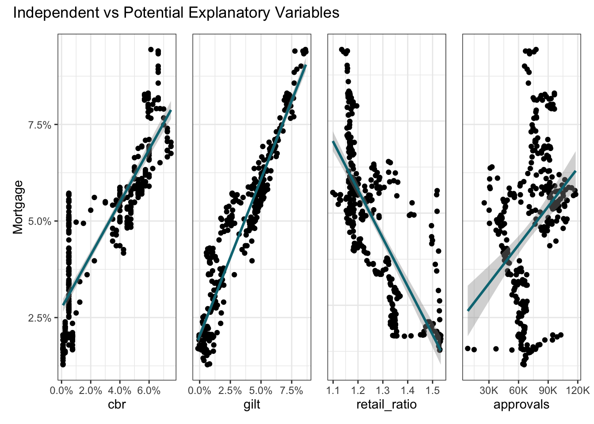
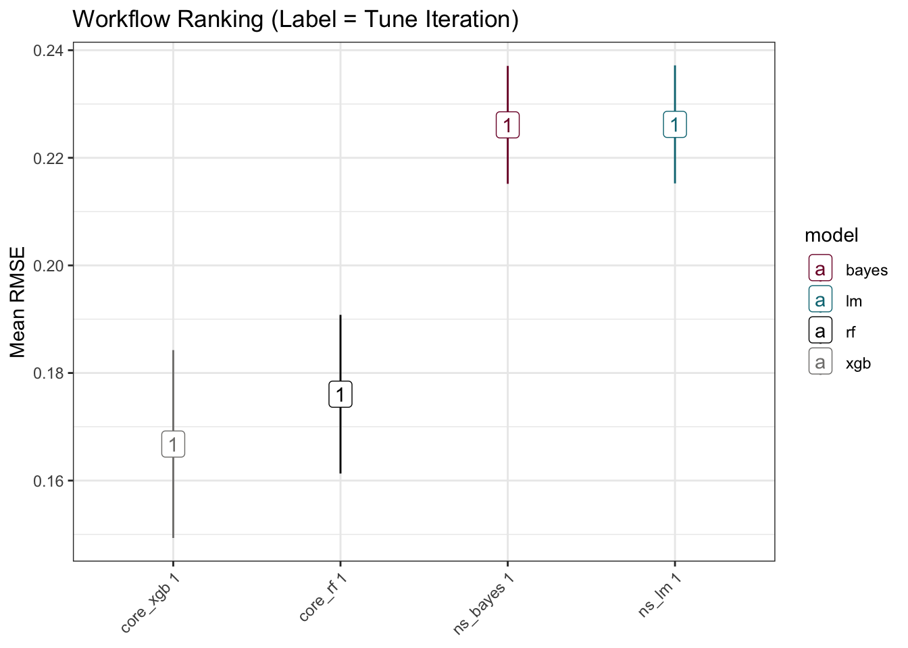
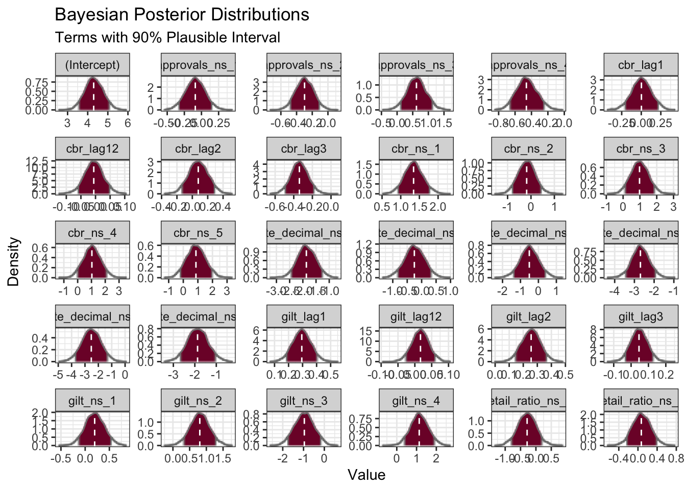
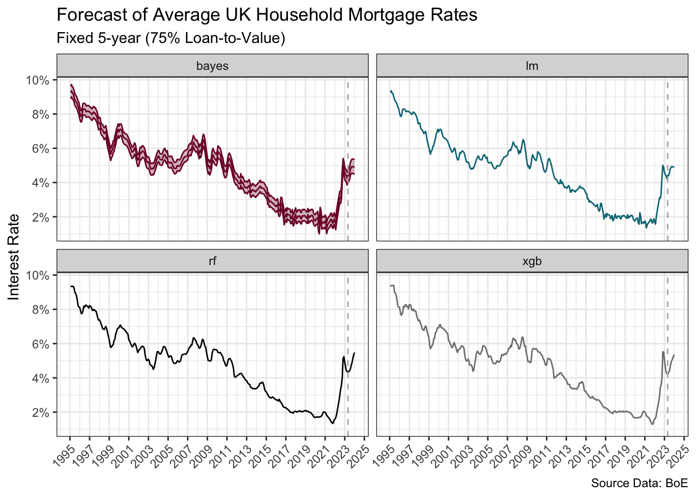

library(conflicted)
library(tidyverse)
conflict_prefer_all("dplyr", quiet = TRUE)
library(tidymodels)
library(feasts)
library(tsibble)
library(glue)
library(scales)
library(patchwork)
library(ggfx)
library(janitor)
library(rvest)
library(broom.mixed)
library(imputeTS)
library(readxl)
library(rstantools)
library(shapviz)
library(kernelshap)
library(finetune)
library(tictoc)
library(ggfoundry)
library(usedthese)
conflict_scout()Bayes Lived Here (Probably)
R
bayesian regression
markov chain monte carlo
machine learning
web scraping
special effects
Predicting the interest rate for a fixed-rate mortgage using Bayesian regression

It’s quite common in the UK, and London in particular, for prominent individuals, such as Dickens, Darwin and Galton, who passed at least 20 years ago, to be commemorated by a plaque on a building in which they lived or with which they were associated.
Thomas Bayes lived in Tunbridge Wells, a few miles to the north of London. His former home has a plaque on the front gate. I couldn’t resist a little digital graffiti.
Mortgages weren’t a thing back then. So I wonder what he would have made of modelling fixed mortgage interest rates with Bayesian linear regression and tuning tree-based models with Bayesian optimisation.
theme_set(theme_bw())
pal <- c(
"#7E1134", "#EDD5C5",
"#057683", "#F3E2D8",
"black", "#7F7E7C"
)
pal_name <- "Palette from Feature Image"
display_palette(pal, pal_name)
Banks review their mortgage interest rates in response to changes in the central bank rate. Fixed-rate mortgages are further influenced by the value of gilts (government bonds). Banks rely less on the wholesale market to fund mortgages when their balance sheet is well supported by savings made by households.
So, to forecast an average fixed 5-year (75% loan-to-value) mortgage rate (mortgage), I’ll try using the central bank rate (cbr), the 5-year yield from British Government Securities (gilt), the ratio of retail deposits to the value of outstanding mortgages (retail_ratio) and the number of new mortgage approvals (approvals). All sourced from the Bank of England1.
get_rate <- \(y, z) {
url <-
str_c(
"https://www.bankofengland.co.uk/boeapps/database/",
"fromshowcolumns.asp?Travel=NIxAZxSUx&FromSeries=1&ToSeries=50&",
"DAT=ALL&",
"FNY=Y&CSVF=TT&html.x=66&html.y=26&SeriesCodes=", y,
"&UsingCodes=Y&Filter=N&title=Quoted%20Rates&VPD=Y"
)
read_html(url) |>
html_element("#stats-table") |>
html_table() |>
clean_names() |>
mutate(date = dmy(date)) |>
rename({{ z }} := 2)
}
pwalk(
list(
x = c("cbr_df", "mor_df", "gil_df", "ret_df", "out_df", "app_df"),
y = c("IUMBEDR", "IUMBV42", "IUMSNPY", "LPMVRJX", "LPMB3TA", "LPMB3VA"),
z = c("cbr", "mortgage", "gilt", "retail", "outstanding", "approvals")
),
\(x, y, z) assign(x, get_rate(y, {{ z }}), .GlobalEnv)
)
boe_list <- list(cbr_df, mor_df, gil_df, ret_df, out_df, app_df)joined_df <-
reduce(boe_list, left_join, join_by(date)) |>
filter(date <= "2023-04-30") |>
mutate(retail_ratio = retail / outstanding) |>
select(-retail, -outstanding)To enable forecasting to year-end, forward-looking estimates are required for the predictors: cbr2, gilt3 and approvals4. Imputation is used to linearly interpolate the interim months.
forward_df <- joined_df |>
rows_append(
tribble(
~date, ~cbr, ~gilt, ~approvals,
ymd("2023-06-30"), 4.57, 4.29, 49000,
ymd("2023-09-30"), 4.90, NA, NA,
ymd("2023-12-31"), 4.92, NA, NA,
ymd("2024-03-31"), 4.64, NA, NA,
ymd("2024-06-30"), 4.30, 4.92, 68000,
)
)
filled_df <-
tibble(date = seq(
joined_df$date |> nth(-2L) |> floor_date("month"),
forward_df$date |> last() |> floor_date("month"),
by = "month"
)) |>
mutate(date = rollforward(date)) |>
left_join(forward_df, join_by(date)) |>
mutate(across(-c(date, mortgage), na_interpolation))
forecast_df <-
bind_rows(actual = joined_df, forecast = filled_df, .id = "id") |>
arrange(date, id) |>
distinct(date, .keep_all = TRUE) |>
mutate(across(c(gilt, cbr),
list(
lag1 = lag,
lag2 = \(x) lag(x, 2),
lag3 = \(x) lag(x, 3),
lag12 = \(x) lag(x, 12)
),
.names = "{.col}_{.fn}"
)) |>
filter(date >= "1995-01-01", date <= "2023-12-31") |>
mutate(mortgage_cut = cut_number(mortgage, 10))All these historical data and forward-looking estimates may then be visualised to get an overall view.
plot_compare <- \(x){
forecast_df |>
ggplot(aes(date, {{ x }}, colour = id)) +
geom_line() +
geom_vline(xintercept = ymd("2023-04-30"), linetype = "dashed", colour = "grey60") +
scale_colour_manual(values = as.character(pal[c(5, 3)])) +
scale_x_date(date_breaks = "2 years", date_labels = "%Y") +
scale_y_continuous(labels = label_number(suffix = "%")) +
labs(x = NULL, colour = NULL) +
theme(
axis.text.x = element_blank(),
axis.ticks.x = element_blank(),
legend.position = "none"
)
}
p1 <- plot_compare(cbr) +
labs(title = "Key Rates", y = "Central\nBank Rate") +
theme(legend.position = "right")
p2 <- plot_compare(gilt) +
labs(y = "5-year\nGilt")
p3 <- plot_compare(retail_ratio) +
scale_y_continuous(labels = label_number()) +
labs(y = "Retail\nRatio")
p4 <- plot_compare(approvals) +
scale_y_continuous(labels = label_number()) +
labs(y = "Approvals")
p5 <- plot_compare(mortgage) +
labs(y = "Fixed 5-year\nMortgage") +
theme(
axis.text.x = element_text(angle = 45, hjust = 1),
axis.ticks.x = element_line()
)
p1 / p2 / p3 / p4 / p5
Cross-correlation shows not only the strength of the relationship between the response (mortgage) and explanatory variables, but also highlights any lagged effects. Spikes outside the dashed lines indicate significant correlation beyond “white noise”.
plot_xcorr <- \(x){
forecast_df |>
mutate(date = yearmonth(date)) |>
as_tsibble(index = date) |>
CCF({{ x }}, mortgage, lag_max = 40) |>
autoplot() +
scale_y_continuous(limits = c(-1, 1)) +
labs(y = NULL) +
theme(
axis.text.y = element_blank(),
axis.ticks.y = element_blank()
)
}
c1 <- plot_xcorr(cbr) +
labs(title = "CBR", y = "Cross Correlation") +
theme_bw()
c2 <- plot_xcorr(gilt) +
ggtitle("Gilt")
c3 <- plot_xcorr(retail_ratio) +
ggtitle("Retail Ratio")
c4 <- plot_xcorr(approvals) +
ggtitle("Approvals")
c1 + c2 + c3 + c4 +
plot_layout(nrow = 1) +
plot_annotation(title = "5-year Fixed-rate Mortgage Correlated With:")
history_df <- forecast_df |>
filter(id == "actual")
plot_lm <- \(x) {
history_df |>
ggplot(aes({{ x }}, mortgage)) +
geom_point() +
geom_smooth(method = "lm", colour = pal[3]) +
scale_x_continuous(labels = label_number(accuracy = 0.1, suffix = "%")) +
scale_y_continuous(labels = label_number(accuracy = 0.1, suffix = "%")) +
theme(
axis.text.y = element_blank(),
axis.ticks.y = element_blank()
) +
labs(y = NULL)
}
l1 <- plot_lm(cbr) +
labs(y = "Mortgage") +
theme_bw()
l2 <- plot_lm(gilt)
l3 <- plot_lm(retail_ratio) +
scale_x_continuous(labels = label_number(accuracy = 0.1))
l4 <- plot_lm(approvals) +
scale_x_continuous(
labels = label_number(
accuracy = 1,
scale_cut = cut_short_scale()
)
)
l1 + l2 + l3 + l4 +
plot_annotation(title = "Independent vs Potential Explanatory Variables") +
plot_layout(nrow = 1)
One could try a time series model5, e.g. ARIMA. This would focus on patterns and pattern changes in the historical mortgage data, i.e. autocorrelation, seasonality and trend. External regressors like cbr and gilt, could then be additionally used to reduce any remaining unexplained variance. The train/test split would be a time-based split. This kind of statistical technique works well when relationships and trends in the historical data are clear and fairly stable such as, for example, with electricity consumption.
A causal model feels more appropriate here. Use of linear or non-linear regression would place the principal focus on the external variables. A causal model also allows the train/test split to be sampled from across the full series rather than requiring a time-based split.
The tidymodels ecosystem, including workflowsets (Kuhn and Couch 2023), will facilitate the fitting and tuning of multiple models with differing recipes: Linear and Bayesian regression models (the latter using weakly informative prior distributions via the rstanarm package (Goodrich et al. 2023)) and the non-linear tree-based models Random Forest and XGBoost.
set.seed(1)
data_split <- history_df |>
initial_split(strata = mortgage_cut)
train <- training(data_split)
test <- testing(data_split)core_recipe <-
train |>
recipe() |>
update_role(mortgage, new_role = "outcome") |>
update_role(id, date, mortgage_cut, new_role = "id") |>
update_role(-has_role(c("outcome", "id")), new_role = "predictor") |>
step_date(date, features = "decimal")
ns_recipe <-
core_recipe |>
step_ns(date_decimal, deg_free = 6) |>
step_ns(cbr, deg_free = 5) |>
step_ns(gilt, approvals, deg_free = 4) |>
step_ns(retail_ratio, deg_free = 2)
lm_model <-
linear_reg()
rf_model <-
rand_forest(
mode = "regression",
trees = 756,
mtry = 5,
min_n = 2
)
xgb_model <-
boost_tree(
mode = "regression",
learn_rate = 0.01,
trees = 1054,
tree_depth = 14,
mtry = 3,
min_n = 3,
)
bayes_model <-
linear_reg() |>
set_engine("stan", refresh = 1)
model_set <-
workflow_set(
preproc = list(
ns = ns_recipe,
ns = ns_recipe,
core = core_recipe,
core = core_recipe
),
models = list(
lm = lm_model,
bayes = bayes_model,
rf = rf_model,
xgb = xgb_model
),
cross = FALSE
)
# core_recipe |> prep() |> bake(new_data = NULL)set.seed(9)
folds <- train |> vfold_cv(strata = mortgage_cut)
# --- Comment out for fit_resamples
# params <- model_set |>
# extract_workflow("core_rf") |> # core_xgb
# parameters() |>
# update(mtry = finalize(mtry(), train))
# ---------------------------------
doParallel::registerDoParallel()
tic()
set_results <- model_set |>
workflow_map("fit_resamples",
# workflow_map("tune_bayes", # Comment out for fit_resamples
resamples = folds,
# param_info = params, # Comment out for fit_resamples
metrics = metric_set(rmse),
initial = 10,
iter = 50,
control = control_bayes(save_workflow = TRUE, no_improve = 30),
seed = 1
)
toc()30.721 sec elapsedset_results |>
rank_results() |>
slice_head(n = 1, by = wflow_id) |>
mutate(
tune = str_extract(.config, "\\d?\\d$"),
model = str_extract(wflow_id, "(?<=_).*$"),
wflow_id = str_c(wflow_id, " ", tune) |> fct_reorder(.x = mean)
) |>
ggplot(aes(wflow_id, mean,
ymin = mean - std_err,
ymax = mean + std_err, colour = model
)) +
geom_pointrange(position = position_dodge(width = 0.9)) +
geom_label(aes(label = tune)) +
scale_colour_manual(values = pal[c(1, 3, 5, 6)]) +
labs(
x = NULL, y = "Mean RMSE",
title = "Workflow Ranking (Label = Tune Iteration)"
) +
theme(axis.text.x = element_text(angle = 45, hjust = 1))
# --- Comment out for fit_resamples
# set_results |>
# extract_workflow_set_result("core_rf") |> # core_xgb
# unnest(.metrics) |>
# summarise(.estimate = mean(.estimate), .config = first(.config),
# .by = c(trees, mtry, min_n)) |> # tree_depth
# arrange(.estimate) |>
# slice_head(n = 1)
# ---------------------------------The models may then be assessed against the test data.
aug_train <- \(x){
set.seed(2023)
set_results |>
filter(wflow_id == x) |>
fit_best(metric = "rmse") |>
augment(test)
}
walk2(
c("xgb_res", "rf_res", "lm_res", "bayes_res"),
c("core_xgb", "core_rf", "ns_lm", "ns_bayes"),
\(x, y) assign(x, aug_train(y), .GlobalEnv)
)The residuals from the trained model used on the test data look quite reasonable aside a small curvature pattern in the linear models. The presence of a pattern could suggest a missing explanatory variable(s), or non-linearity if present only in linear models.
focus_df <- bind_rows(
rf = rf_res |> mutate(model = "Random Forest"),
xgb = xgb_res |> mutate(model = "XGBoost"),
lm = lm_res |> mutate(model = "Linear"),
bayes = bayes_res |> mutate(model = "Bayes"),
.id = "id"
)
label_df <- focus_df |>
nest(-c(id, model)) |>
mutate(metric = map(data, \(x) rmse(x, mortgage, .pred))) |>
unnest(metric) |>
mutate(mortgage = 7.5, .pred = 3.5, .estimate = round(.estimate, 4))
focus_df |>
ggplot(aes(.pred, mortgage)) +
geom_point(alpha = 0.5, size = 0.5) +
geom_abline(alpha = 0.5) +
geom_smooth(se = FALSE, size = 0.5) +
geom_label(aes(label = glue("RMSE\n{.estimate}")),
data = label_df, size = 3, fill = pal[2]
) +
coord_obs_pred() +
facet_wrap(~model) +
labs(
title = "Observed vs Predicted Mortgage Rates",
subtitle = "Test Data",
x = "Predictions", y = "Observations"
)
focus_df |>
mutate(residual = mortgage - .pred) |>
ggplot(aes(sample = residual, colour = id)) +
geom_qq() +
geom_qq_line() +
facet_wrap(~model) +
scale_y_continuous(limits = c(-1, 1)) +
scale_colour_manual(values = pal[c(1, 3, 5, 6)]) +
labs(title = "QQ Plot of Residuals", subtitle = "Test Data")
focus_df |>
mutate(residual = mortgage - .pred) |>
ggplot(aes(date, residual, colour = id)) +
geom_hline(yintercept = 0, linetype = "dashed", colour = pal[3], linewidth = 1) +
geom_point() +
geom_smooth() +
facet_wrap(~model) +
scale_x_date(date_breaks = "2 years", date_labels = "%Y") +
scale_y_continuous(limits = c(-1, 1)) +
scale_colour_manual(values = pal[c(1, 3, 5, 6)]) +
labs(title = "Residuals Over Time", subtitle = "Test Data", x = NULL, y = "Residuals") +
theme(axis.text.x = element_text(angle = 45, hjust = 1))
It makes sense to now train the tuned model(s) on all the historical data.
fit_hist <- \(y){
set.seed(2023)
model_set |>
extract_workflow(y) |>
fit(data = history_df)
}
walk2(
c("xgb_fit", "rf_fit", "bayes_fit", "lm_fit"),
c("core_xgb", "core_rf", "ns_bayes", "ns_lm"),
\(x, y) assign(x, fit_hist(y), .GlobalEnv)
)
aug_fit <- \(y) y |> augment(forecast_df)
walk2(
c("xgb_res", "rf_res", "bayes_res", "lm_res"),
list(xgb_fit, rf_fit, bayes_fit, lm_fit),
\(x, y) assign(x, aug_fit(y), .GlobalEnv)
)Feature importance unsurprisingly confirms higher gilt and cbr values equate to higher mortgage rates.
set.seed(2023)
make_shap <- \(y){
kernelshap(y,
X = forecast_df,
bg_X = train |> slice_sample(n = 50),
feature_names = train |> select(-c(id, mortgage, mortgage_cut)) |> names(),
parallel = TRUE
) |>
shapviz()
}
tic()
walk2(
c("xgb_shap", "rf_shap", "bayes_shap", "lm_shap"),
list(xgb_fit, rf_fit, bayes_fit, lm_fit),
\(x, y) assign(x, make_shap(y), .GlobalEnv)
)
toc()
mshap <- c(bayes = bayes_shap, xgb = xgb_shap, lm = lm_shap, rf = rf_shap)
# 119.9 sec elapsedsv_importance(mshap, "beeswarm", color_bar_title = NULL) +
plot_annotation(title = "Feature Importance (Yellow = High Feature Value)")
row_id <- last(which(forecast_df$date == max(forecast_df$date)))
sv_waterfall(mshap, row_id = row_id, max_display = 14) +
plot_annotation(
title = glue("{stamp('March 1, 2000')(max(forecast_df$date))} Waterfall")
)
Whilst modelling with Bayesian (in contrast to linear) regression comes with the computational cost of Markov Chain Monte Carlo (MCMC) simulation, the pay-off is the provision of a credible range of values for each of the parameters in addition to the coefficient point estimates.
ci <- tidy(bayes_fit, conf.int = TRUE, conf.level = 0.9)
as.data.frame(extract_fit_engine(bayes_fit)) |>
pivot_longer(everything(), names_to = "term") |>
filter(term != "sigma") |>
ggplot(aes(value)) +
as_reference(geom_density(fill = "white"), id = "density") +
with_blend(
geom_rect(
aes(
x = NULL, y = NULL, xmin = conf.low, xmax = conf.high,
ymin = -Inf, ymax = Inf, fill = term
),
data = ci, colour = "grey50", fill = pal[1],
),
bg_layer = "density", blend_type = "atop"
) +
geom_vline(aes(xintercept = estimate),
colour = "white",
linetype = "dashed", data = ci
) +
geom_density(colour = "grey50") +
facet_wrap(~term, scales = "free") +
labs(
y = "Density", fill = "Term",
title = "Bayesian Posterior Distributions", x = "Value",
subtitle = "Terms with 90% Plausible Interval"
) +
theme(legend.position = "none")
The plot below shows the final point estimate for each model as well as a 90% prediction interval for the Bayesian model using rstantools (Gabry et al. 2023).
The forecasts are, at least initially, directionally similar. The test residuals and RMSE would favour the non-linear models, and XGBoost in particular, over the linear models for these data. The forecasts are further dependent upon the quality of the forward-looking externally-sourced estimates for the predictors.
pi <- predictive_interval(extract_fit_engine(bayes_fit),
newdata = ns_recipe |> prep() |> bake(new_data = forecast_df),
prob = 0.9
) |>
as_tibble() |>
mutate(date = forecast_df$date)
bind_rows(
xgb = xgb_res,
bayes = bayes_res,
rf = rf_res,
lm = lm_res,
.id = "model"
) |>
left_join(pi, join_by(date)) |>
mutate(across(c(`5%`, `95%`), \(x) if_else(model != "bayes", NA, x))) |>
ggplot(aes(date, .pred, ymin = `5%`, ymax = `95%`, colour = model, fill = model)) +
geom_ribbon(fill = pal[1], alpha = 0.3) +
geom_line() +
geom_vline(xintercept = ymd("2023-04-30"), linetype = "dashed", colour = "grey70") +
scale_y_continuous(
labels = label_number(suffix = "%"),
breaks = c(2, 4, 6, 8, 10)
) +
scale_x_date(date_breaks = "2 years", date_labels = "%Y") +
scale_colour_manual(values = pal[c(1, 3, 5, 6)]) +
scale_fill_manual(values = pal[c(1, 3, 5, 6)]) +
labs(
title = "Forecast of Average UK Household Mortgage Rates",
subtitle = "Fixed 5-year (75% Loan-to-Value)",
x = NULL, y = "Interest Rate",
caption = "Source Data: BoE"
) +
facet_wrap(~model) +
theme(
axis.text.x = element_text(angle = 45, hjust = 1),
legend.position = "none"
)
R Toolbox
Summarising below the packages and functions used in this post enables me to separately create a toolbox visualisation summarising the usage of packages and functions across all posts.
used_here()| Package | Function |
|---|---|
| base | as.character[1], as.data.frame[1], assign[5], c[27], library[21], list[7], max[2], names[1], readRDS[1], round[1], seq[1], set.seed[5], which[1] |
| conflicted | conflict_prefer_all[1], conflict_scout[1] |
| doParallel | registerDoParallel[1] |
| dplyr | across[3], arrange[1], bind_rows[3], distinct[1], filter[5], if_else[1], join_by[3], lag[3], last[2], left_join[2], mutate[18], nth[1], rename[1], rows_append[1], select[2], slice_head[1], slice_sample[1], tribble[1] |
| feasts | CCF[1] |
| forcats | fct_reorder[1] |
| generics | augment[2], fit[1], tidy[1] |
| ggfoundry | display_palette[1] |
| ggfx | as_reference[1], with_blend[1] |
| ggplot2 | aes[12], autoplot[1], cut_number[1], element_blank[6], element_line[1], element_text[4], facet_wrap[5], geom_abline[1], geom_density[2], geom_hline[1], geom_label[2], geom_line[2], geom_point[3], geom_pointrange[1], geom_qq[1], geom_qq_line[1], geom_rect[1], geom_ribbon[1], geom_smooth[3], geom_vline[3], ggplot[8], ggtitle[3], labs[16], position_dodge[1], scale_colour_manual[5], scale_fill_manual[1], scale_x_continuous[3], scale_x_date[3], scale_y_continuous[8], theme[9], theme_bw[3], theme_set[1] |
| glue | glue[2] |
| hardhat | extract_fit_engine[2], extract_workflow[1] |
| janitor | clean_names[1] |
| kernelshap | kernelshap[1] |
| lubridate | dmy[1], floor_date[2], rollforward[1], stamp[1], year[1], ymd[7] |
| parsnip | boost_tree[1], linear_reg[2], rand_forest[1], set_engine[1] |
| patchwork | plot_annotation[4], plot_layout[2] |
| purrr | map[1], pwalk[1], reduce[1], walk2[4] |
| recipes | bake[1], has_role[1], prep[1], recipe[1], step_date[1], step_ns[4], update_role[3] |
| rsample | initial_split[1], testing[1], training[1], vfold_cv[1] |
| rstantools | predictive_interval[1] |
| rvest | html_element[1], html_table[1] |
| scales | cut_short_scale[1], label_number[8] |
| shapviz | shapviz[1], sv_importance[1], sv_waterfall[1] |
| stringr | str_c[2], str_extract[2] |
| tibble | as_tibble[1], tibble[1] |
| tictoc | tic[2], toc[2] |
| tidyr | nest[1], pivot_longer[1], unnest[1] |
| tidyselect | everything[1] |
| tsibble | as_tsibble[1], yearmonth[1] |
| tune | control_bayes[1], coord_obs_pred[1], fit_best[1] |
| usedthese | used_here[1] |
| workflowsets | rank_results[1], workflow_map[1], workflow_set[1] |
| xml2 | read_html[1] |
| yardstick | metric_set[1], rmse[1] |
References
Gabry, Jonah, Ben Goodrich, Martin Lysy, and Andrew Johnson. 2023. Rstantools: Tools for Developing r Packages Interfacing with ’Stan’. https://CRAN.R-project.org/package=rstantools.
Goodrich, Ben, Jonah Gabry, Imad Ali, and Sam Brilleman. 2023. Rstanarm: Bayesian Applied Regression Modeling via Stan. https://mc-stan.org/rstanarm/.
Kuhn, Max, and Simon Couch. 2023. Workflowsets: Create a Collection of ’Tidymodels’ Workflows. https://CRAN.R-project.org/package=workflowsets.
O’Hara-Wild, Mitchell, Rob Hyndman, and Earo Wang. 2023. Fable: Forecasting Models for Tidy Time Series. https://CRAN.R-project.org/package=fable.
Footnotes
Per Legal | Bank of England, the information made available via the Database is the copyright of the Governor and Company of the Bank, unless otherwise stated. Reproduction of data in the Database is subject to the terms of the UK Open Government Licence, allowing and encouraging free and flexible data reuse.↩︎
econforecasting.com (2023). Consensus Interest Rate Forecast Model. Retrieved from https://econforecasting.com/forecast-ukbankrate.↩︎
Estimated by Trading Economics↩︎
Estimated by Trading Economics↩︎
See Forecasting: Principles and Practice with implementation via the fable package(O’Hara-Wild et al. 2023).↩︎